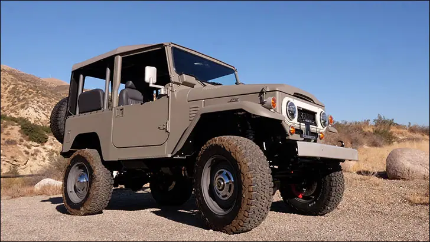
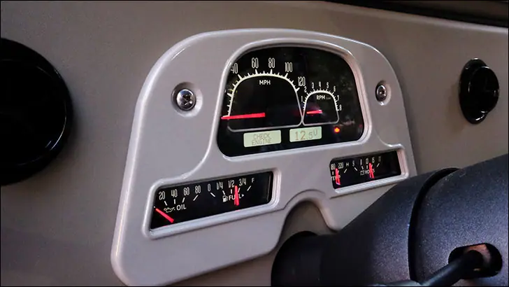
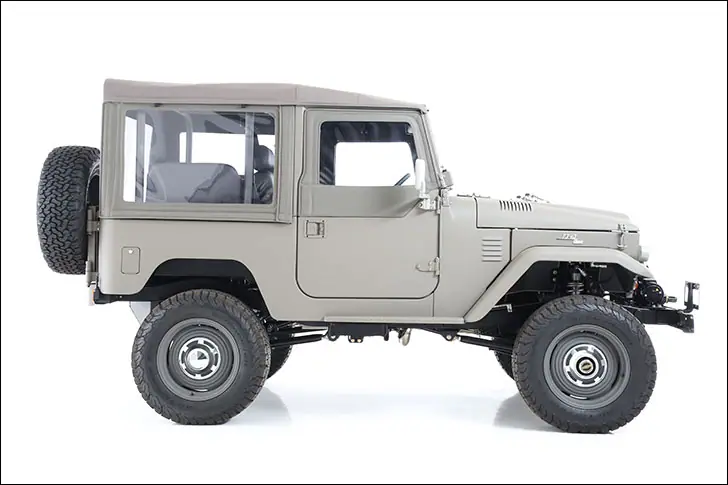
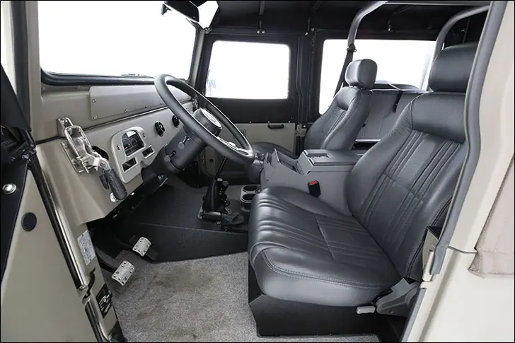
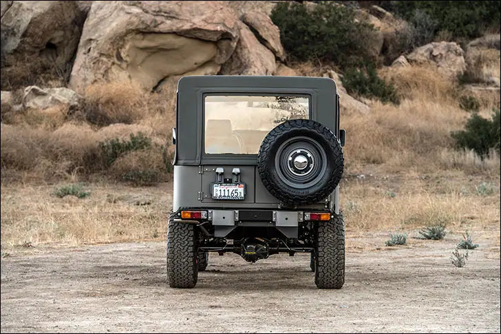
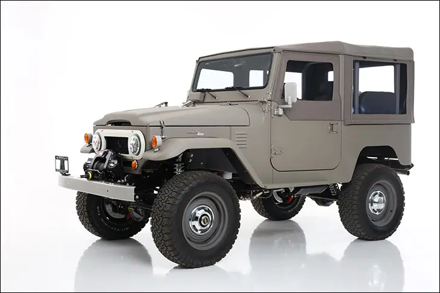

Six Degrees Icon FJ Old School


True Icon
Icon 4x4 puts their spin on the Toyota FJ40
We used to be a bit ignorant to the popularity of Toyota’s classic FJ40. Billed as an SUV these days, they were a strong reply to the vaunted Jeep for those who wanted to tackle tough terrain. Based on a tip from an industry friend, we developed a direct fit VHX-series instrument system for the FJ, and quite literally overnight we learned just how hearty the following is.
We’ve featured other unique rides spawned from the fertile mind of Jonathan Ward and his able-bodied shop, Icon 4x4, but this is our first time taking a peek inside their rendition of a Toyota FJ40. If what you see here really gets your wheels turning, Icon will build an FJ40 for you, too, allowing you to choose the engine, wheels, colors and a few other details. Icon 4x4 vehicles can be summed up with the words thoughtful and slick, among one thousand other adjectives.

Typically this is where we tell you a cool story about where this rig came from and when it rolled into the Icon shop for a rebuild. Not this time, though, as Icon selects old FJ’s that are basically beyond salvation through traditional restoration processes. This allows them to revolutionize the engineering and ergonomics, while staying true to the original silhouette. The body tub is built by hand using 5/32” aluminum, which further elevates the original by avoiding the well-known rust habits of the FJ40. The hood however is a new piece from Toyota, and the grill is an original vintage unit. In lieu of paint, a hybrid powder coat featuring Teflon was applied inside and out for a durable, uniform finish that looks good and requires minimal maintenance.

The interior is blissfully basic, staying true to the utilitarian intentions of the original FJ40. A pair of leather-wrapped bucket seats flanks a powder coated stainless steel center console and trio of shifters that are all-business. A few aluminum AC vents share dash space with five clearly marked knobs for lights, wipers and climate control, along with a Dakota Digital instrument system equipped with a custom, Icon-designed overlay for a vintage look. The VHX-62T-FJ is tucked in behind an Icon-machined aluminum bezel that looks the part of the stock trim.

Modern instrumentation is a must when running a high tech and powerful engine. This particular FJ is running the new Cummins R2.8 diesel crate engine which brings Bosch fuel injection and a turbo to the party. If you’d prefer a 430hp 6.2L GM LS engine, that’s just an option-box-check away when it comes time to spec your own rig. An Asin-Warner AX15 5-speed manual trans sends the 267lbs/ft to the Atlas-II transfercase and on to Dynatrac Dana 60/44 axles. The suspension on the Icon FJ is no joke either, with a full 12” of travel from the Fox/Eibach coilovers, four-link rear system and monster control arms. And, how cool are those 285/70 18 BFG tires on what appear to be big steelies, but are actually forged aluminum?!

We’ve barely scratched the surface of the Icon FJ40 I’m afraid, as the details are many. What looks plain and simple is really the result of many hours of studying; how do you make something so practical look elegant and refined? It’s a mix of hiding things in plain sight while remaining thoughtful to the overall package. If you “don’t get it” when looking at the Icon FJ40, I understand. I mean, why would anyone want such a beautiful 4x4 vehicle to thrash in the woods? Take comfort knowing that this FJ40 has capabilities that far exceed the original rigs which developed a cult-following.
Also on dakotadigital.com.